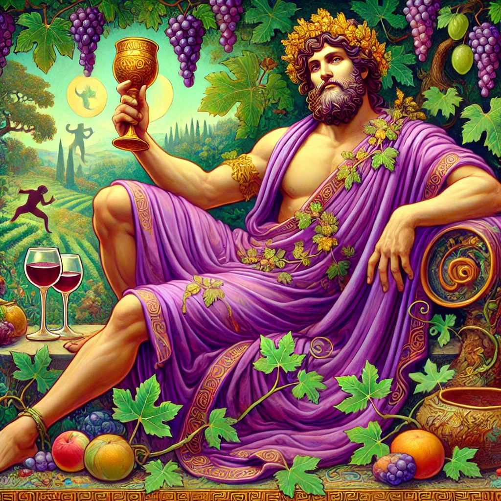
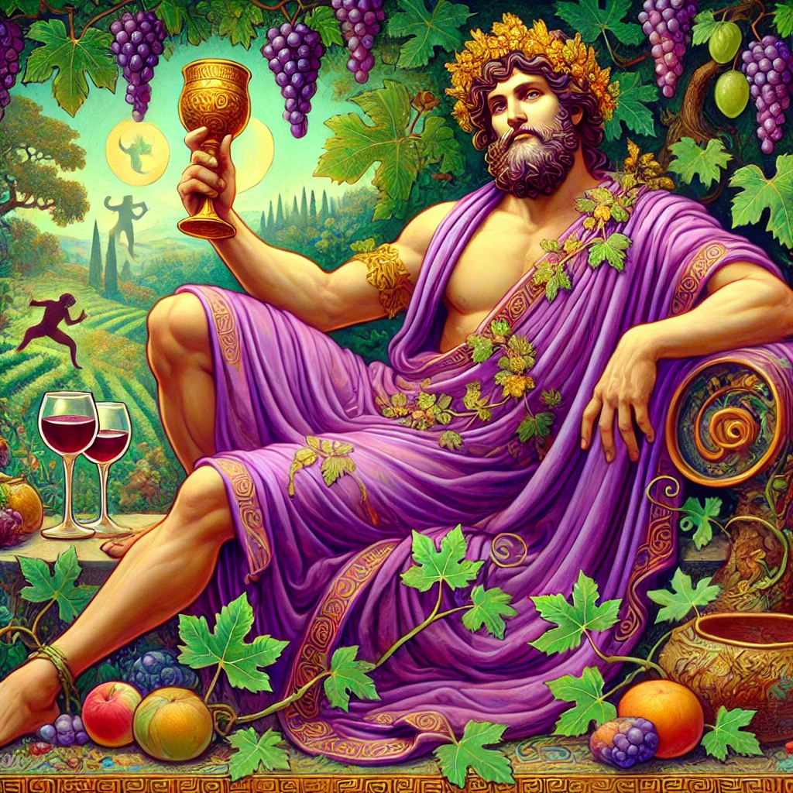

Roman Name: Ceres
Parents: Cronus and Rhea
Spouse(s): None, but had Persephone with Zeus
Siblings: Zeus, Poseidon, Hades, Hera, Hestia
Children: Persephone, Arion (with Poseidon)
Demeter is the Greek goddess of agriculture, harvest, and fertility. She is one of the Olympian deities and the daughter of Cronus and Rhea. Her Roman counterpart is Ceres. As the goddess responsible for crops and the changing seasons, she was deeply respected by farmers and those who depended on the land for food.
Demeter is best known for her deep love for her daughter, Persephone. When Hades, the god of the underworld, kidnapped Persephone, Demeter's grief caused the earth to become barren. This myth explains the cycle of the seasons. When Persephone is with her mother, the earth blooms, bringing spring and summer. When she returns to the underworld, fall and winter follow.
Demeter is often depicted wearing a crown of wheat and holding a torch or a cornucopia. She was worshiped in many places, especially in Eleusis, where the famous Eleusinian Mysteries were held in her honor. These secret rituals promised hope for life after death.
As a kind yet powerful goddess, Demeter showed great care for humanity, teaching them how to grow crops. Her influence on the natural world made her one of the most important deities in Greek mythology.
Notable Stories About Demeter:
Persephone, the beautiful daughter of Demeter, loved to spend her days wandering through meadows, picking flowers with her friends. One day, as she reached for a particularly lovely bloom, the ground beneath her suddenly cracked open. Out of the darkness emerged Hades, the god of the underworld, in his golden chariot. Before Persephone could react, he swept her away into the depths of his dark kingdom.
Demeter, unaware of what had happened, searched the earth for her daughter. She called out Persephone's name, but no one answered. For days, she wandered, growing more and more desperate. Eventually, she learned the truth—Hades had taken Persephone to be his queen.
Heartbroken and furious, Demeter abandoned her duties as the goddess of the harvest. Without her care, crops withered, and famine spread across the land. The once green fields turned dry and lifeless, and people began to suffer.
Seeing the world in despair, Zeus, the king of the gods, knew he had to act. He sent Hermes, the swift messenger, to the underworld to bring Persephone back. Hades agreed to let her go, but before she left, he tricked her into eating a few seeds from a pomegranate. Because she had eaten food from the underworld, she could not leave forever.
A compromise was made: Persephone would spend part of the year with her mother on earth, bringing warmth and growth, and part of the year with Hades in the underworld. When she was with Demeter, the earth flourished, and crops grew—this was spring and summer. When she returned to the underworld, Demeter mourned, and the land became barren—this was fall and winter.
This is how the ancient Greeks explained the changing seasons, with Demeter’s sorrow and joy shaping the cycle of life on earth.
After Persephone was taken by Hades, Demeter wandered the earth in disguise, searching for her daughter. Weary and heartbroken, she arrived in the city of Eleusis, where she took the form of an old woman. She sat by a well, resting from her journey, when she was approached by the daughters of King Celeus. Seeing the elderly woman in need, they invited her to their home.
Demeter, still in disguise, was welcomed by Queen Metaneira, who offered her food and shelter. In gratitude, Demeter took care of the queen’s infant son, Demophon. She grew fond of the child and decided to make him immortal by placing him in a sacred fire each night, burning away his mortality.
One night, Queen Metaneira walked in and saw what was happening. Horrified, she screamed, thinking Demeter meant to harm the child. The goddess, angered by the interruption, revealed her true form, shining with divine radiance. She scolded the queen for interfering, explaining that Demophon had nearly become a god.
Despite this, Demeter did not punish the people of Eleusis. Instead, she instructed them to build a great temple in her honor and taught them sacred rites that would later become the Eleusinian Mysteries, one of the most important religious ceremonies in ancient Greece.
These mysteries celebrated the cycle of life, death, and rebirth, mirroring Demeter’s sorrow and joy as Persephone traveled between the underworld and the earth. The people of Eleusis honored Demeter for generations, and her blessings ensured that their fields were fertile and their harvests abundant.
Poseidon once fell in love with the goddess Demeter. However, Demeter did not return his feelings and tried to distract him by asking for an impossible task—she told Poseidon to create the most beautiful creature the world had ever seen.
Determined to impress her, Poseidon began shaping animals from the sea foam and earth. He first created great sea monsters, then land creatures like camels, giraffes, and even zebras. However, none of them satisfied him. Finally, he sculpted a magnificent animal, strong and swift, with a flowing mane and powerful legs—the first horse.
As soon as the horse galloped across the land, Poseidon realized he had created something truly special. Though Demeter still did not love him, he had given the world a noble and loyal animal. Horses became symbols of strength and freedom, and they were closely connected to Poseidon, who was often called the “Tamer of Horses.”
To this day, Poseidon is honored as the creator of horses, and many ancient Greeks believed that his spirit lived in the wild stallions that roamed the land.
Click on an image below to learn more about the Olympians:
 Home
Home
 Zeus
Zeus
 Hera
Hera
 Poseidon
Poseidon
 Athena
Athena
 Apollo
Apollo
 Artemis
Artemis
 Ares
Ares
 Aphrodite
Aphrodite
 Hephaestus
Hephaestus
 Hermes
Dionysus
Hermes
Dionysus
 Hades
Hades
 Hestia
Hestia
© 2025 Stephen Sovocool